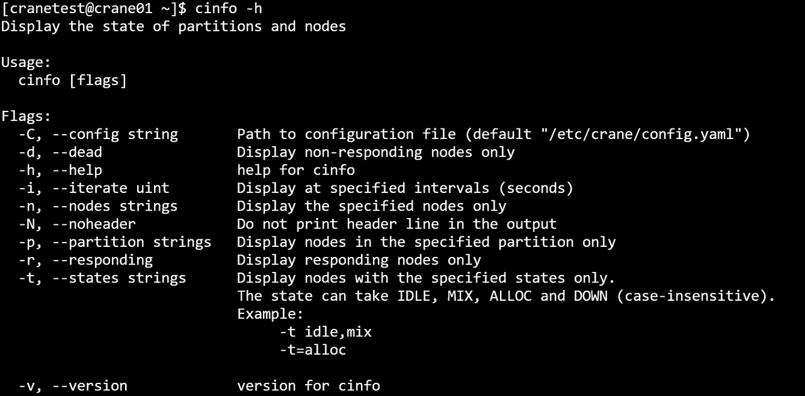
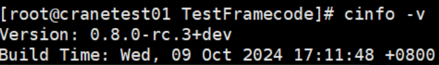

cinfo 查看节点与分区状态
cinfo可查询各分区节点的队列资源信息。
查看分区节点状态：
cinfo
cinfo运行结果展示
主要输出项 - PARTITION：分区名 - AVAIL： 分区状态 - up: 可用 - down:不可用 - NODES：节点数 - STATE： 节点状态 - idle： 空闲 - mix： 节点部分核心可以使用 - alloc： 节点已被占用 - down： 节点不可用 - NODELIST： 节点列表
主要参数 - -h/--help: 显示帮助 - -C/--config string：配置文件路径(默认为 "/etc/crane/config.yaml") - -d/--dead：只显示无响应节点 - -i/--iterate uint：指定间隔秒数刷新查询结果。如 -i=3表示每隔三秒输出一次查询结果 - -o/--format string 指定输出格式 - % p /% Partition —— 显示当前环境中的所有分区 - % a/% Avail —— 显示节点的状态 - % n/% Nodes —— 显示分区节点的数量 - % s/% State —— 显示分区节点的状态 - % l/% NodeList —— 显示分区中的所有节点列表
每个格式标识符或字符串都可以用宽度说明符修改（例如，“%.5j” ）。如果指定了宽度，字段将被格式化为至少达到该宽度。如果格式无效或无法识别，程序将报错并终止。
- --json：json格式输出命令执行结果
- -n/--nodes string：显示指定节点信息，多个节点用逗号隔开。例：cinfo -n crane01,crane02
- -N/--noheader：输出隐藏表头
- -p/--partition string：显示指定分区信息，多个分区用逗号隔开。例：cinfo -p CPU,GPU
- -r/--responding：只显示有响应节点
- -t/--states string：仅显示状态的信息。状态可以为(不区分大小写): IDLE, MIX, ALLOC和DOWN
- -v/--version：查询版本号
例：
cinfo
cinfo -h

cinfo -N
cinfo -d
cinfo -i 3
cinfo -n crane01,crane02,crane03
cinfo -p GPU,CPU
cinfo -r
cinfo -t IDLE
cinfo -v
